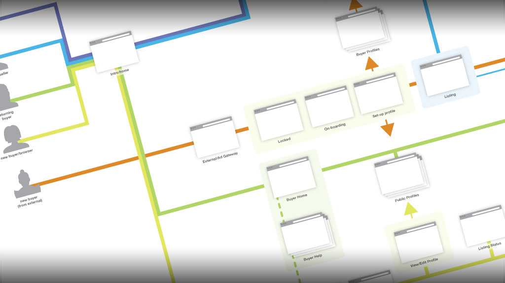

Responsive web design

User-flow diagram that maps user actions to various steps in the acquisition funnelRead More
Built for Change
A website is not a precious artifact. It's a tool. In the post-web-standards era, techniques used to build websites have evolved. Here are 5 key tips to building a modern website.
1. Define the layout globally
Sometimes called scaffolding, a grid system is very helpful in developing a consistent layout. Instead of hard-coding the varying widths of each of the items and laying them out individually from scratch, the code should establish the basic column structure and define each element in relation to what’s been defined globally.
- Awesome talk by Eric Fisher, former product designer/developer at Facebook
- Author and inventor, Ray Kurzweil dropping science about the future
- The app that provides social context in a physical space
Want to see more? More samples are available upon request.